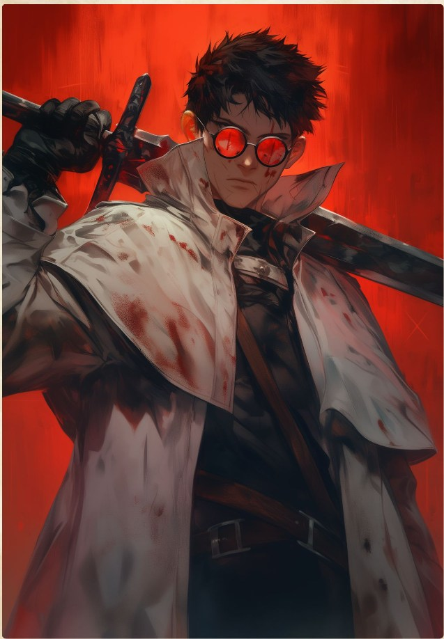

Campaign V — Bestiary — Boss
❄

Midnight
CR 1310,000 XP
AC 21 (Plate Armor)
Initiative +2 (12)
HP 248 (24d10+116)
Speed 40 ft.
STR
20
+5 (+10)
DEX
15
+2 (+7)
CON
18
+4 (+9)
INT
11
+0 (+0)
WIS
13
+1 (+6)
CHA
10
+0 (+0)
Saving Throws Str +10, Dex +7, Con +9, Wis +6
Skills Athletics +10, History +5, Investigation +5, Perception +6
Resistances Poison
Condition Immunities Frightened, Poisoned
Senses Darkvision 60 ft., Passive Perception 16
Languages Common, Undercommon, Giant
CR 13 (10,000 XP; PB +5)
Traits
Cold Rationality. Midnight gains advantage on saving throws against spells and effects that attempt to manipulate his emotions or alter his mind. Additionally, he cannot be blinded or deafened by nonmagical means.
Second Wind (2/Long Rest). As a Bonus Action, Midnight regains 1d10 + 13 Hit Points.
Action Surge (1/Short Rest). On his turn, Midnight can take one additional action.
Indomitable (1/Long Rest). If Midnight fails a saving throw, he can reroll it with a bonus equal to his Challenge Rating (+13). He must use the new roll.
Divine Smite (3/Day). Immediately after Midnight hits a target with a melee weapon attack, he can expend one use of this trait to deal an additional 9 (2d8) radiant damage to the target.
Actions
Multiattack. Midnight makes three weapon attacks with his Greatsword
Greatsword. Melee Weapon Attack: +11 to hit, reach 10 ft., one target., Hit: 1d12+1d10+6 slashing damage
Midnight Cleave (Recharge 6). Midnight swings his massive blade in a devastating 20-foot cone. Each creature in that area must make a DC 18 Dexterity saving throw, taking 45 (10d8) slashing damage on a failed save, or half as much damage on a successful one. Nonmagical structures and objects in the area automatically take maximum damage.
Vial Stimulant Injection (Bonus Action). Midnight plunges a strange green needle into his neck. Until the end of his next turn, his Speed increases by 20 feet, and the first time he hits with a weapon attack during this period, the attack deals an extra 4 (1d8) poison damage.
Reactions
Parry. When Midnight is hit by a melee attack, he uses his massive greatsword to block the blow. Midnight rolls his Greatsword damage with extra 1d8 damage, (1d12+1d10+1d8+6) and reduces the incoming damage by the total rolled.
Riposte. In response to taking damage from a melee attack made by a creature within 10 feet of him, Midnight makes one Greatsword attack against the attacker.